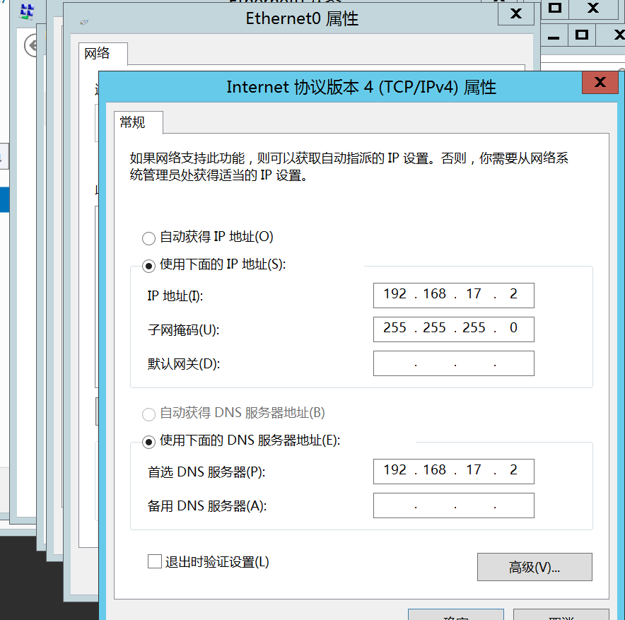

内网渗透学习-基础知识
最后更新时间:
文章总字数:
预计阅读时间:
内网也指局域网，是指在某一区域由多台计算机互连而成的计算机组。
一、内网基础知识
0x01 工作组
对局域网中的计算机进行分类，使得网络更有序。计算机的管理依然是各自为政，所有计算机依然是对等的，松散会员制，可以随意加入和退出，且不同工作组之间的共享资源可以相互访问。
0x02 域
分类：单域、子域、父域、域树、域森林、DNS域名服务器
“域”是一个有安全边界的计算机组合（一个域中的用户无法访问另一个域中的资源），域内资源由一台域控制器（Domain Controller，DC）集中管理，用户名和密码是放在域控制器去验证的。
优点：通过组策略来统一管理。
单域：即只有一个域的网络环境，一般需要两台DC，一台DC，另一台备用DC（容灾）
父子域：类比公司总部和公司分部的关系，总部的域称为父域，各分部的域称为该域的子域。使用父子域的好处：
减小了域之间信息交互的压力（域内信息交互不会压缩，域间信息交互可压缩）
不同的子域可以指定特定的安全策略
父子域中域名使用一个.表示一个层次，类似于DNS域名表示方式，子域只能使用父域的名字作为域名后缀
域树：多个域通过建立信任关系组成的集合。若两个域之间需要相互访问，需要建立信任关系（Trust Relation），通过信任关系可以将父子域连接成树状结构
域森林：多个域树通过建立信任关系组成的集合。
DNS域名服务器：实现域名到IP地址的转换。由于域中计算机使用DNS来定位DC、服务器和其他计算机，所以域的名字就是DNS域的名字。
内网渗透中，大都是通过寻找DNS服务器来确定域控制器位置（因为DNS服务器和域控制器通常配置在一台机器上）
0x03 活动目录
活动目录（Active Directory，AD）是指域环境中提供目录服务的组件，用于存储有关网络对象（用户、组、计算机、共享资源、联系人）的信息。基于活动目录有目录服务，用于帮助用户从活动目录中快速找到所需的消息。活动目录使得企业可以对网络环境进行集中管理。（可类比为内网中的索引，里面存储有内网里所有资源的快捷方式）
活动目录的逻辑结构包含组织单元、域、域树、域森林。域树内的所有域共享一个活动目录，因此非常适合进行统一管理。
活动目录的功能：
账号集中管理
软件集中管理
环境集中管理
增强安全性
更可靠、更短的宕机时间
**域和活动目录的区别：**要实现域环境，其实就是要安装AD。一台计算机安装了AD之后就变成了DC。
下面解释一下AD与DC的区别
0x04 AD与DC的区别
如果网络规模较大，我们就会考虑把网络中的众多对象：计算机、用户、用户组、打印机、共享文件等，分门别类、井然有序地放在一个大仓库中，并做好检索信息，以利于查找、管理和使用这些对象（资源）。这个有层次结构的数据库，就是活动目录数据库，简称AD库。
那么我们应该把这个数据库放在哪台计算机上呢？规定是这样的，我们把存放有活动目录数据库的计算机就称为DC。所以说我们要实现域环境，其实就是要安装AD，当内网中的一台计算机安装了AD后，它就变成了DC。
那么有了域环境的话，回答最初的问题：在域环境中，只需要在活动目录中创建一次Alan账户，那么就可以在任意200台电脑中的一台上登录Alan，如果要为Alan账户更改密码，只需要在活动目录中更改一次就可以了。
0x05 安全域的划分
5.1 内网
安全级别最高
分为核心区（存储企业最重要的数据，只有很少的主机能够访问）和办公区（员工日常工作区，一般能够访问DMZ，部分主机可以访问核心区）
5.2 DMZ（Demilitarized Zone）
边界网络，隔离区，安全级别中等
作为内网中安全系统和非安全系统之间的缓冲区，用于对外提供服务，一般可以放置一些必须公开的服务器设施
5.3 外网
Internet，安全级别最低
拥有DMZ的网络需要制定一些访问控制策略：
1.内网可以访问外网
2.内网可以访问DMZ
3.外网不能访问内网
4.外网可以访问DMZ
5.DMZ不能访问内网
6.DMZ不能访问外网
0x06 域中计算机的分类
域控制器、成员服务器、客户机、独立服务器
域控制器：用于管理所有的网络访问，存储域内所有的账户和策略信息。允许网络中拥有多台域控制器（容灾）
成员服务器：安装了服务器操作系统并加入了域，但没有安装活动目录的计算机，主要任务是提供网络资源
客户机：安装了其他操作系统的计算机，利用这些计算机和域中的账户就可以登录到域。
独立服务器：和域无关，既不加入域，也没有活动目录
域控制器是存放活动目录数据库的，是域中必须要有的，而其他三种则不是必须的，也就是说最简单的域可以只包含一台计算机，这台计算机就是该域的域控制器。
域中各个服务器的角色也是可以改变的，例如域服务器在删除活动目录时，如果是域中最后一个域控制器，则该域服务器会成为独立服务器，如果不是域中唯一的域控制器，则将使该服务器成为成员服务器。
同时独立服务器既可以转换为域控制器，也可以加入到某个域成为成员服务器。
0x07 域内权限
1 | |
可以简单这样记忆：
- 域本地组：来自全林用于本域
- 全局组：来自本域用于全林
- 通用组：来自全林用于全林
0x07 A-G-DL-P策略：
A：用户账户
G：全局组
DL：域本地组
P：许可，资源权限
先将用户账号添加至全局组中，再将全局组添加至域本地组中，然后为域本地组分配资源权限。按照AGDLP的原则对用户进行组织和管理起来更容易。
在AGDLP形成以后,当给一个用户某一个权限的时候,只要把这个用户加入到某一个本地域组就可以了。
0x08 域内权限解读
8.1 域本地组
来自全林作用于本域
- Administrators（管理员组） ————最重要的权限
- Remote Desktop Users(远程登录组)
- Print Operators（打印机操作员组）
- Account Operators（帐号操作员组）
- Server Operaters（服务器操作员组）
- Backup Operators（备份操作员组）
8.2 全局组
来自本域作用于全林
8.3 通用组
来自全林作用于全林
8.4 全局组、通用组的权限
Domain Admins（域管理员组）————最最最重要的权限，一般来说域渗透是看重这个
Enterprise Admins（企业系统管理员组）————最重要的权限，其次是去看重这个权限
Schema Admins（架构管理员组）————最重要的权限
Domain Users（域用户组)
1.通常DNS服务器与域控制器会在同一台机器上
2.一个域内至少需要两台DC，需要一台用作备份
二、常用工具分类
0x01 主机平台及常用工具总结
WCE（Windows凭据管理器）
minikatz（从内存中获取明文密码）
Responder（嗅探网络中所有的LLMNR包，获取主机的信息）
BeEF（一款针对浏览器的渗透测试工具）
DSHashes（从NTDSXtract中提取用户易于理解的散列值）
PowerSploit（一款基于PowerShell的后渗透测试框架）
Nishang（一款针对Powershell的渗透测试工具）
Empire（一款内网渗透测试利器）
ps_encoder.py（使用Base64编码封装的Powershell命令包）
smbexec（一个使用samba工具的快速psExec工具）
后门制造工厂（对PE、ELF等二进制注入Shellcode）
Veil（用于生成绕过常见杀软的Metasploit有效载荷）
Metasploit（计算机安全漏洞项目框架）
Cobalt Strike（一款优秀的后渗透测试平台）
0x02 Windows渗透常用工具
Nmap（一款免费的网络发现和安全审计工具）
Wireshark（一款免费且开源的网络协议和数据包解析器）
PuTTY（一款免费且开源的SSH和Telnet客户端）
SQLMap（一款免费且开源的SQL注入工具）
BurpSuite（一款针对Web应用程序进行安全测试的代理工具）
Hydra（一个网络登录暴力破解工具）
Getif（一款收集SNMP设备信息的工具）
Cain&Abel（一个密码恢复工具，集成嗅探等多种功能）
PowerSploit（一款基于PowerShell的后渗透测试框架）
Nishang（一款针对Powershell的渗透测试工具）
0x03 PowerShell基本命令
3.1 查看Powershell版本
1 | |
3.2 Powershell 常用命令
1 | |
3.3 常见用途
1 | |
三、内网环境搭建
实验：搭建内网环境
1.搭建域环境
实验环境
工具： vmvare、winserver2012、winserver2008、win7镜像
下载地址：MSDN
1、winserver2012 R2搭建
1.首先配置win12的ip地址。我们可以先ipconfig查看其地址和默认网关等，然后配置成其静态IP等。
这里应该是192.168.17.129（照片错误）

2.在控制面板-系统和安全-系统-高级系统设置、域和工作组-计算机名–更改–计算机名
3.安装域控制器和dns服务。
选择服务器管理器，选择添加角色和功能向导，在服务器角色 选择DNS服务器
在服务器角色窗口选择Active Directory域服务和DNS服务器
一路默认设置到确认页面
勾选自动重新启动服务器，然后安装。
4.升级服务器
安装完毕后。点击将此服务器提升为域控制器
在Active Directory域服务配置向导界面，在部署配置部分单击选中”添加新林”，然后输入根域名”hacke.testlab”(必须使用符合DNS命名约定的根域名)。
在域控制器选项部分，将林功能级别，域功能级别都设置成”Windows Server 2012 R2”。创建域林时，在默认情况下应选择DNS服务器，林中的第一个域控制器必须是全局目录服务器且不能是只读域控制器（RODC）。然后，设置目录服务还原模式的密码（在开机进入安全模式修复活动目录数据库时使用此密码）
然后到DNS选项，会出现关于DNS的警告。不用理会警告，保持默认设置。
然后一路都是默认配置
安装完成后重启
5.创建Active Directory 用户
为win2008和win7用户创建域控制器账户。
在”Active Directory”用户和计算机界面中选择”Users”目录并单击右键，使用弹出的快捷菜单添加用户。
创建testuser账户
2、Win2008 R2服务器
1.配置IP
Windows Server 2008 R2 的IP地址和DNS服务器地址如下：
测试一下，ping hacker.testlab
2.加入域
输入域的名称，点击”确定”，随后会让输入设置的用户名和密码：

重启计算机，登陆
输入net view /domain:hacker查看域用户，(每台域内机器均可查看)
搭建了一个简单的域环境
注：如果出现6118的问题，百度就可以解决，一般就是防火墙和Computer Browser未开启的问题
参考：net view 时报错 发生系统错误 6118 解决
3、Win7服务器
1.先更改ip地址，然后设置dns地，然后ping一下试试。
2.ping通，说明前半部分搭建成功。
3.更改计算机名，更改为win7-X64-test，将域名更改为hacker.testlab
4.然后输入域管理员的账号和密码后，立即重启。
这里在win7使用net user /domain命令时，总是报错：发生系统错误5，百度了很多，有的说是权限问题，但我即使以管理员身份也不行。最后看了N多篇搭建文章，也没啥成果，但是看了一篇文章说，重启后我们以域管理员的身份登录win7即可
如上图成功了，这里我也不清楚是否不以域管理员登录也能执行命令，但我感觉应该是搭建过程中少了点什么，这里也没深究。
不过似乎要实际加入域环境中需要用域账号登录，或许这里我存在着理解错误
到此搭建了一个最简单的内网环境，以后有需要在接着搭建，现在就先学习了解一下，为实战做准备。
四、参考文章
顺便记录一个激活系统的软件地址：神龙KMS来激活的系统，很方便
http://www.yishimei.cn/network/319.html